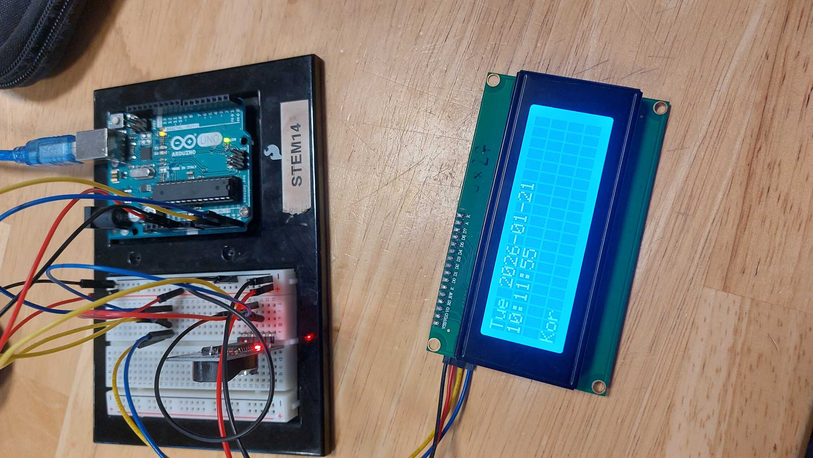
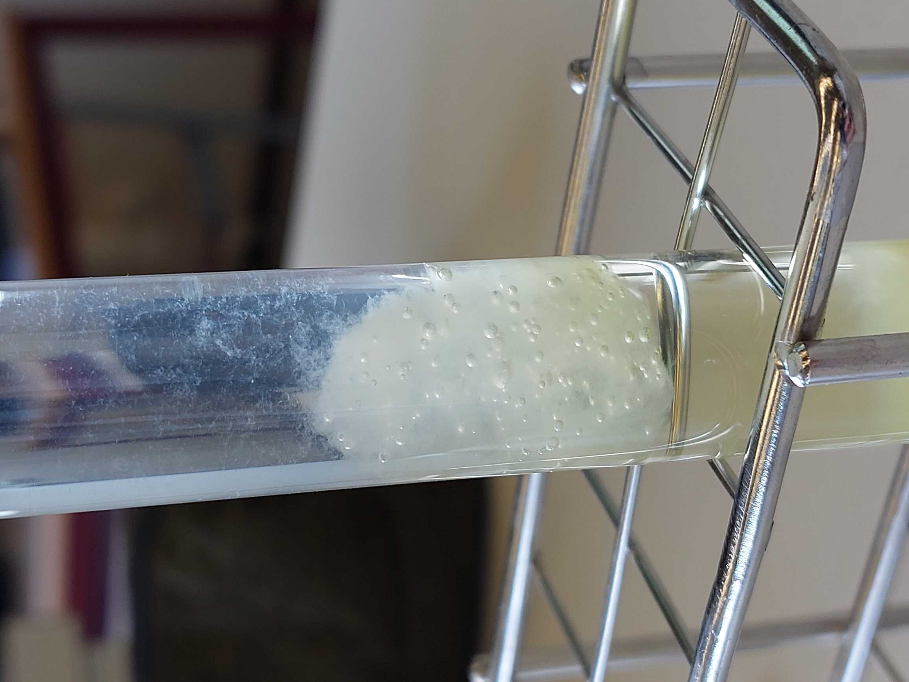
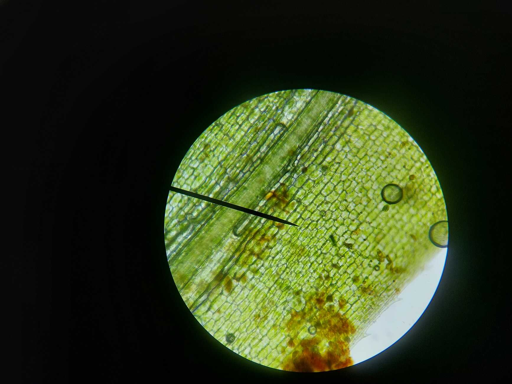
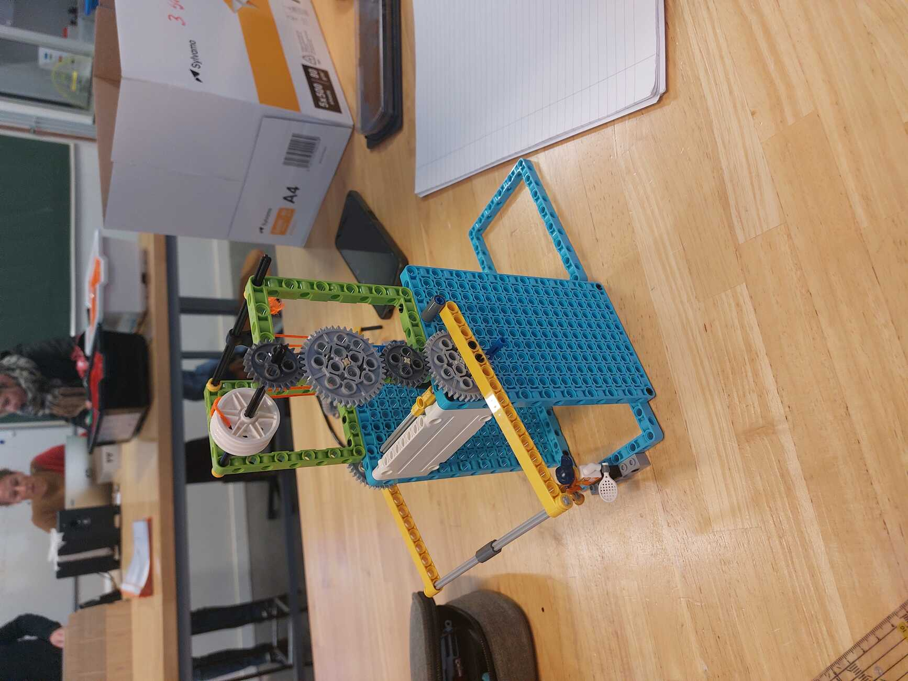
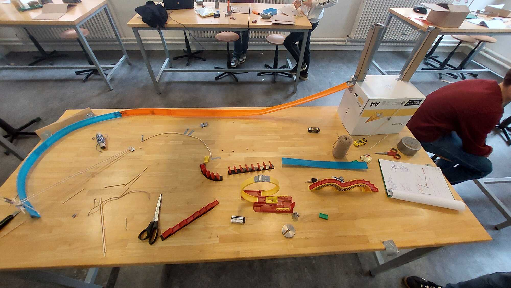
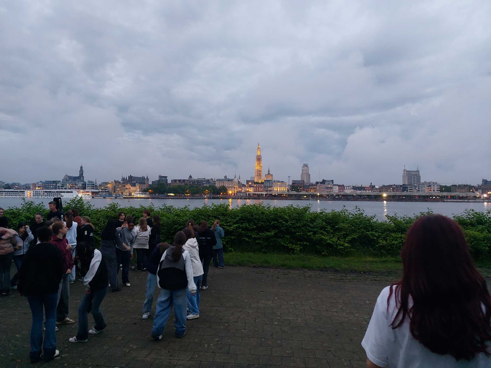

Nog een voorbeeld van een project waarbij de scrummethode belangrijk is, is het bouwen van een escaperoom. We ontwerpen en bouwen samen een kamer vol puzzels en uitdagingen die moeten worden opgelost door andere STEM-klassen om te ontsnappen.
In de STEM-lessen werken we met Arduino, een programmeerbaar microcontrollerbord.
We bouwen schakelingen en schrijven zelf code om sensoren, motoren en andere onderdelen aan te sturen.
Op die manier passen we theorie meteen toe in de praktijk en leren we stap voor stap hoe automatisering en
elektronische systemen werken.


In de STEM-lessen halen we DNA uit een kiwi. Met eenvoudige proefjes maken we het DNA zichtbaar.
Zo zien we met onze eigen ogen dat erfelijk materiaal echt in fruit en andere levende organismen zit.
We bekijken ook de cellen van planten en onderzoeken hoe ze zijn opgebouwd. Hierbij letten we op onderdelen zoals de celwand, het cytoplasma en de kern. Met een microscoop kunnen we de cellen echt zien en verschillende plantencellen met elkaar vergelijken.


In de lessen stem bouwen we samen een machine met tandwielen en hefbomen. We zetten alle onderdelen stap
voor stap in elkaar.
We werken hierbij volgens de scrummethode. In kleine groepjes pakken we telkens een stukje op, bespreken we
hoe het gaat en sturen we bij waar nodig. Zo leren we niet alleen de machine bouwen, maar ook goed
samenwerken.
In de lessen stem bouwen we samen een Rube Goldberg machine: een kettingreactie van tandwielen, hefbomen en
andere onderdelen die elkaar opvolgen om één simpele taak uit te voeren.
Het is een project waarbij we scrum toepassen. We verdelen het werk in taken op een scrumbord en komen
elke les samen in een kort standup om bij te sturen.

Nog een voorbeeld van een project waarbij de scrummethode belangrijk is, is het bouwen van een escaperoom. We ontwerpen en bouwen samen een kamer vol puzzels en uitdagingen die moeten worden opgelost door andere STEM-klassen om te ontsnappen.
In het 2de jaar van de STEM-richting gaan we op 3-daagse naar Antwerpen. Tijdens deze trip bezoeken we veel
leuke plaatsen zoals het MAS, de Schelde, de Chocoladefabriek.
Ook heb je veel vrije tijd in de stad en
zijn er heel leuke avondactiviteiten.
Het is een geweldige kans om samen plezier te maken, elkaar beter
te leren kennen en als team te groeien!
